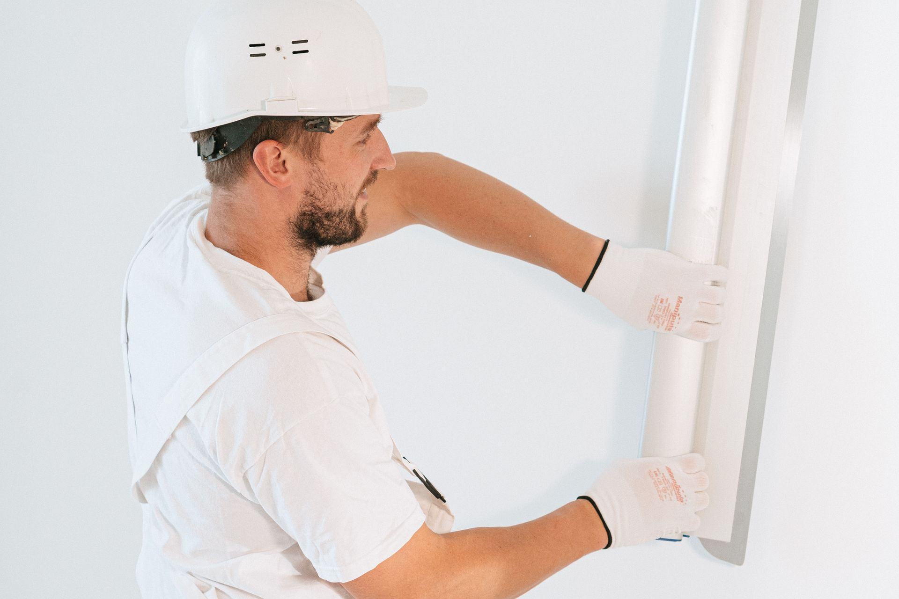

A website that
starts the job.
A practical website, helpful AI chat, and a clear way to request a visit. Built around the questions your home-service customers actually ask.
Get a free walkthrough
Start a conversation.
Customers need to understand what you do, where you work, and how to reach you. We bring those essentials together with simple inquiry and booking tools, so the next step feels obvious.
A clear, focused website
A website or landing page that explains your services and gives visitors a straightforward path to request an appointment. Already have a site? We can discuss improving it instead of starting over.
Chat with a handoff
AI chat can answer basic customer questions and collect service details. A person handles follow-up or confirmation when needed. The chat workflow is agreed before setup.
The right details
Capture the customer’s name, number, location, and service request. Contact forms and online booking connect the first inquiry to the next conversation.
Agree on the setup
We review your trade, existing website, current tools, expected lead volume, and coverage requirements. Scope and any tool-specific requirements are confirmed during the setup conversation.
Website and chat inquiries can be collected after hours. Human follow-up takes place during agreed coverage hours. Live incoming phone answering is included only in the Dedicated Dispatcher System.